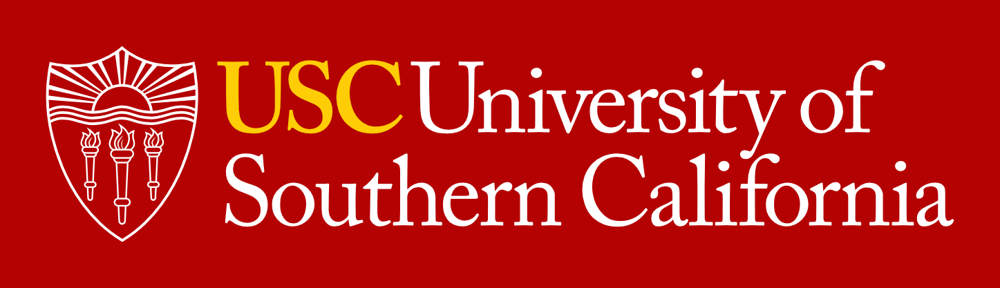
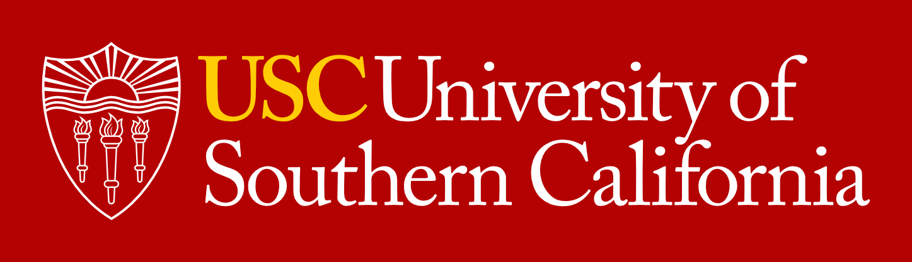

About laboratory en ru
The principal goal of the project is the establishment of Laboratory of Non-Equilibrium Flows and Aerothermodynamics of Space Vehicles at the Novosibirsk State University (NSU) under the leadership of Sergey Gimelshein, an Astronautics Professor of the University of Southern California (USA). The most qualified experts in the field of computational and experimental aerodynamics of non-equilibrium flows from NSU and the Khristianovich Institute of Theoretical and Applied Mechanics (ITAM) will be involved in the cutting edge research that aims at providing the ground for the development of breakthrough aerospace technologies.
The unifying feature of the wide spectrum of problems under consideration is the thermal and chemical non-equilibrium of the flow. A pivotal feature of the project is the synergy of theoretical, computational, and experimental work. As a result of its fulfillment, new theoretical models capturing non-equilibrium flow physics and chemistry will be developed, implemented in powerful CFD software systems (including those geared for computations on state-of-the-art hybrid supercomputers), and validated against experiments performed in the framework of the proposed projects. A hallmark of the proposed numerical strategy is the combined application of two different approaches to the description of gas medium, a kinetic approach based on the Boltzmann equation and a continuum approach based on the Navier-Stokes equations and other macroscopic gas models. The strategy will allow the proposers to consider the entire range of flow regimes, and provide a possibility for cross-validation of the numerical approaches for conditions where experimental data is scarce or not available. The establishment of such a laboratory headed by a renowned aerospace scientist and the involvement of highly skilled researchers from the Novosibirsk Scientific Center will provide the unique opportunity for scientific breakthrough in the field of aerophysics of non- equilbrium flows. It will be instrumental in the further development of Novosibirsk State University both as a research and educational institution.

 
